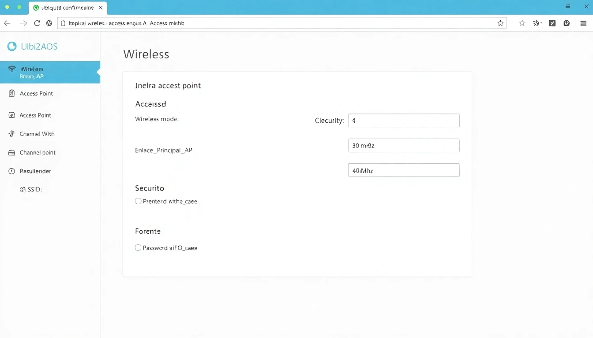
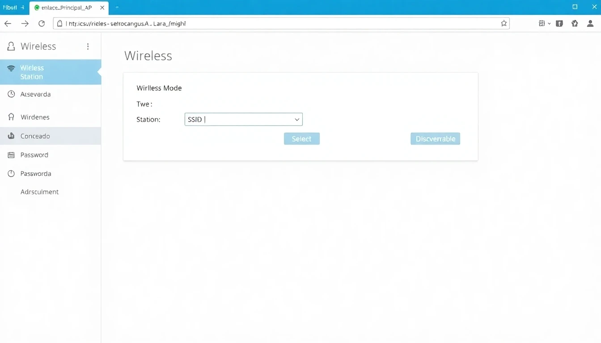
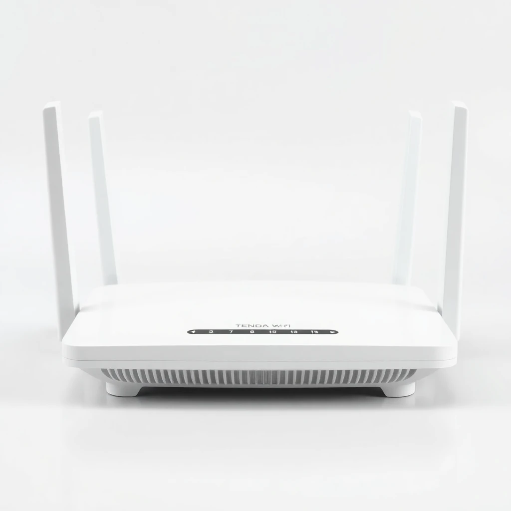
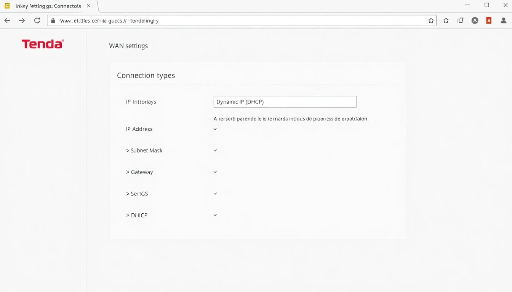
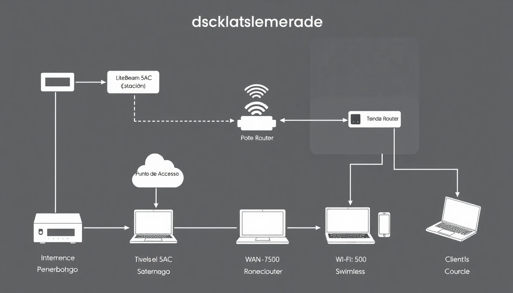

Esta guía detallada le proporcionará los pasos necesarios para configurar e instalar un enlace inalámbrico punto a punto utilizando dispositivos Ubiquiti LiteBeam 5AC y distribuir la conexión a internet mediante un router Tenda. Este tipo de configuración es ideal para llevar conectividad a edificios o ubicaciones remotas donde no es posible extender el cableado.
1. LiteBeam 5AC: Descripción General y Componentes
El Ubiquiti LiteBeam 5AC es un dispositivo CPE (Customer Premises Equipment) diseñado para enlaces inalámbricos de larga distancia. Opera en la banda de 5 GHz y utiliza la tecnología airMAX ac para ofrecer un alto rendimiento.
Figura 1: Dispositivo Ubiquiti LiteBeam 5AC
Componentes Clave:
Antena Integrada: Proporciona un patrón de haz direccional.
Radio airMAX ac: Módulo inalámbrico de alta velocidad.
Puerto Ethernet: Para alimentación PoE y conexión a la red.
PoE Injector (Adaptador PoE): Necesario para alimentar el dispositivo a través del cable Ethernet.
2. LiteBeam 5AC: Configuración
La configuración del LiteBeam 5AC se realiza a través de su interfaz web. Generalmente, se configuran dos LiteBeam: uno como Punto de Acceso (AP) y otro como Estación (Station) para crear el enlace.
2.1. Acceso Inicial al LiteBeam
Conecte su computadora al puerto LAN del PoE Injector. Conecte el puerto "PoE" del injector al puerto Ethernet del LiteBeam.
Configure la IP de su computadora en el mismo segmento que la IP por defecto del LiteBeam (ej. 192.168.1.X, donde X no es 20).
Abra un navegador web y acceda a la dirección IP por defecto del LiteBeam: 192.168.1.20.
Las credenciales por defecto suelen ser: Usuario: ubnt, Contraseña: ubnt. Se le pedirá cambiar la contraseña al primer inicio de sesión.
2.2. Configuración del LiteBeam como Punto de Acceso (AP)
Este LiteBeam será el "emisor" de la señal, conectado a la fuente de internet.
Paso 1: Pestaña "Wireless"
Wireless Mode: Seleccione "Access Point".
SSID: Ingrese un nombre para su red (ej. "Enlace_Principal_AP").
Channel Width: Se recomienda 40 MHz para un buen rendimiento.
Frequency List: Active "Auto" o seleccione una frecuencia libre.
Security: Seleccione "WPA2-AES" y establezca una contraseña fuerte para el enlace.

Figura 2: Interfaz de Configuración Wireless (AP)
Paso 2: Pestaña "Network"
Network Mode: Router o Bridge. Para un enlace transparente, seleccione "Bridge".
IP Address: Asigne una IP estática fuera del rango DHCP de su router principal (ej. 192.168.1.250).
Netmask: 255.255.255.0
Gateway IP: La IP de su router principal (ej. 192.168.1.1).
Primary DNS: Use la IP del Gateway o un DNS público (ej. 8.8.8.8).
Paso 3: Guardar Cambios
Haga clic en "Change" y luego en "Apply" en la parte superior derecha para guardar los cambios.
2.3. Configuración del LiteBeam como Estación (Station)
Este LiteBeam será el "receptor" de la señal, ubicado en el lugar donde desea tener internet.
Paso 1: Pestaña "Wireless"
Wireless Mode: Seleccione "Station".
SSID: Haga clic en "Select" y busque el SSID del AP configurado anteriormente (ej. "Enlace_Principal_AP"). Selecciónelo y haga clic en "Select".
Ingrese la contraseña de seguridad que configuró en el AP.

Figura 3: Interfaz de Configuración Wireless (Station)
Paso 2: Pestaña "Network"
Network Mode: "Bridge" para un enlace transparente.
IP Address: Asigne una IP estática diferente a la del AP, pero en el mismo segmento (ej. 192.168.1.249).
Netmask: 255.255.255.0
Gateway IP: La IP de su router principal (ej. 192.168.1.1).
Primary DNS: Use la IP del Gateway o un DNS público (ej. 8.8.8.8).
Paso 3: Guardar Cambios
Haga clic en "Change" y luego en "Apply" para guardar los cambios.
3. Router Tenda: Descripción General y Componentes
Un router Tenda es un dispositivo de red común que permite compartir una conexión a internet entre múltiples dispositivos, tanto por cable (Ethernet) como de forma inalámbrica (Wi-Fi).

Figura 4: Dispositivo Router Tenda
Puertos y Luces Indicadoras:
Puerto WAN (azul o de otro color distintivo): Para conectar el internet entrante (en este caso, del LiteBeam Station).
Puertos LAN (amarillos): Para conectar dispositivos por cable (computadoras, consolas).
Antenas Wi-Fi: Para la conectividad inalámbrica.
Luces LED: Indican el estado de energía, internet, Wi-Fi y puertos LAN.
4. Router Tenda: Configuración
El router Tenda será el encargado de distribuir la conexión que recibe del LiteBeam Station.
4.1. Acceso Inicial al Router Tenda
Conecte su computadora a uno de los puertos LAN amarillos del router Tenda.
Abra un navegador web y acceda a la dirección IP por defecto del router Tenda. Suele ser 192.168.0.1 o 192.168.1.1. Verifique la etiqueta en la parte inferior del router si no está seguro.
Las credenciales por defecto suelen ser: Usuario: admin, Contraseña: admin (o no pedir contraseña y pedirle que configure una).
4.2. Configuración de Internet
Una vez dentro de la interfaz, el router Tenda suele tener un asistente de configuración rápida.
Tipo de Conexión a Internet: Seleccione "DHCP" o "Dynamic IP". Esto es crucial, ya que el LiteBeam Station (en modo Bridge) pasará la IP de internet directamente al router Tenda.
Guarde la configuración. El router debería obtener una IP pública (o la IP del gateway de su ISP) automáticamente.

Figura 5: Interfaz de Configuración de Internet del Router Tenda
4.3. Configuración de Wi-Fi (Red Local)
Vaya a la sección de "Configuración Inalámbrica" o "Wi-Fi Settings".
Nombre de Red (SSID): Asigne un nombre a su red Wi-Fi (ej. "MiCasa_WiFi").
Contraseña de Wi-Fi: Establezca una contraseña fuerte para su red Wi-Fi.
Seleccione "WPA2-PSK" como método de seguridad.
Guarde los cambios.
5. Conexión e Instalación Física
La correcta conexión física es fundamental para el funcionamiento del sistema.

Figura 6: Diagrama de Conexión Completa
Instalación del LiteBeam AP:
Monte el LiteBeam AP en un lugar elevado y sin obstrucciones, con visión directa hacia la ubicación del LiteBeam Station.
Conecte un cable Ethernet del puerto LAN de su router principal (con internet) al puerto LAN del PoE Injector del LiteBeam AP.
Conecte el puerto PoE del injector al puerto Ethernet del LiteBeam AP.
Instalación del LiteBeam Station:
Monte el LiteBeam Station en un lugar elevado y sin obstrucciones, con visión directa hacia el LiteBeam AP.
Conecte el puerto Ethernet del LiteBeam Station al puerto PoE del PoE Injector del Station.
Conecte el puerto LAN del PoE Injector del Station al puerto WAN (azul) del router Tenda.
Conexión del Router Tenda:
Conecte el router Tenda a la corriente eléctrica.
Los dispositivos que usen cable se conectarán a los puertos LAN del router Tenda.
Los dispositivos inalámbricos se conectarán a la red Wi-Fi del router Tenda.
Alineación de los LiteBeam:
Una vez encendidos ambos LiteBeam, utilice las luces LED de señal en la parte posterior del LiteBeam (o la herramienta de alineación en la interfaz web) para ajustar la orientación y lograr la máxima intensidad de señal entre ellos. Esto es crítico para un enlace estable.
6. Verificación y Resolución de Problemas
6.1. Verificación de la Conexión:
Luces del LiteBeam: Verifique que las luces de señal estén encendidas y estables en ambos LiteBeam.
Luces del Router Tenda: La luz de "Internet" o "WAN" en el router Tenda debe estar encendida y, preferiblemente, parpadeando.
Ping: Desde una computadora conectada al router Tenda, intente hacer ping a google.com.
Navegación: Intente abrir una página web.
6.2. Problemas Comunes y Soluciones:
No hay conexión a internet:
Verifique la alineación de los LiteBeam.
Asegúrese de que el LiteBeam Station esté conectado al puerto WAN del router Tenda.
Compruebe que el tipo de conexión a internet en el router Tenda sea "DHCP" o "Dynamic IP".
Reinicie los tres dispositivos (router principal, LiteBeam AP, LiteBeam Station, router Tenda) en secuencia.
No puedo acceder a la interfaz del LiteBeam:
Asegúrese de que la IP de su computadora esté en el mismo segmento que la IP del LiteBeam (192.168.1.X).
Verifique el cableado y la alimentación PoE.
Bajo rendimiento del enlace:
Revisar la alineación.
Buscar interferencias en la frecuencia (cambiar canal en el LiteBeam AP).
Asegurarse de que el "Channel Width" sea adecuado (40 MHz es un buen balance).